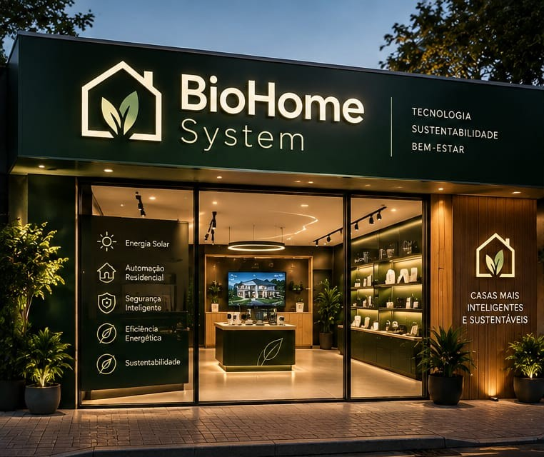
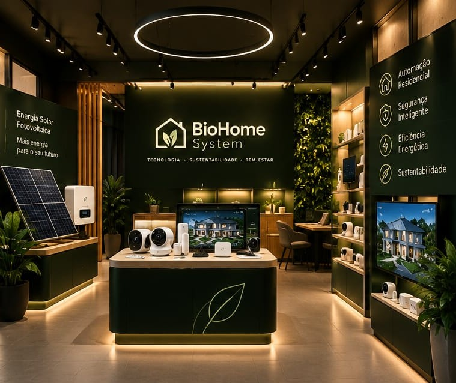

A BioHome Systems é uma integradora de tecnologia residencial de alto padrão que nasce com o
propósito de transformar residências em ecossistemas inteligentes,
eficientes e profundamente conectados ao bem-estar. Unindo engenharia de ponta a um
designminimalista, a empresa desenvolve projetos personalizados de automação
que antecipamas necessidades dos moradores, proporcionando o máximo em conforto térmico,
acústicoe luminoso. Mais do que conveniência, a marca se posiciona na
vanguarda do mercadoao criar lares que respondem ao toque ou ao comando de voz,
garantindo uma experiência de moradia sofisticada, intuitiva e sem esforço.
Comprometida com o futuro das cidades e a preservação ambiental, a BioHome Systems integra
sustentabilidade e inovação tecnológica de forma simbiótica. Por meio de algoritmos
inteligentes de gerenciamento de energia, controle automatizado de iluminação natural
e otimização de recursos hídricos e de climatização, nossas soluções reduzem drasticamente
a pegada de carbono residencial sem comprometer a elegância e a praticidade.
Ao alinhar a robustez de uma grande corporação de engenharia à atenção meticulosa aos
detalhes de um atendimento exclusivo, a empresa entrega inteligência residencial que valoriza
o patrimônio e respeita o planeta.

